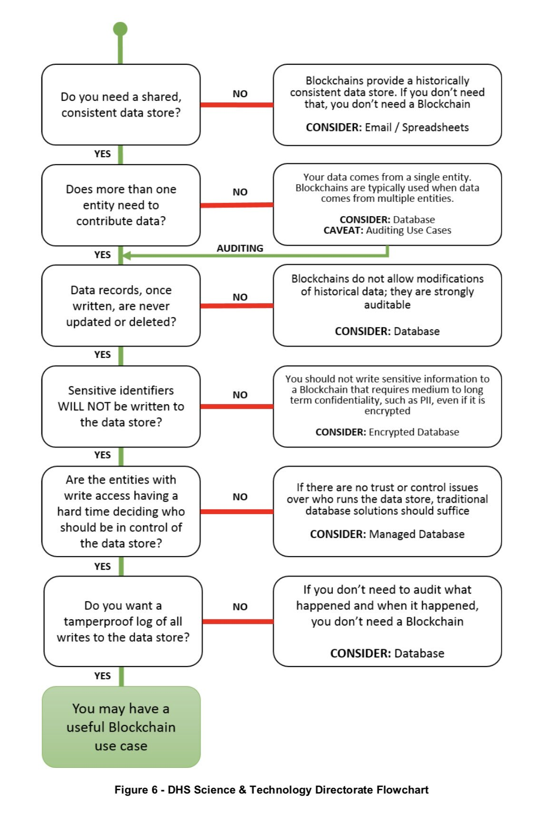

Group Project: Blockchain Chain of Custody
- Due Date
April 27
- Done By
Groups
- Checkpoint
March 28
The Chain of Custody form is a critical element to a forensic investigation because examiners use it to record the history of the evidence from the time it is found until the case is closed or goes to court. By keeping this record, examiners can show that the integrity of the evidence has been preserved and not open to compromise. And in the unfortunate event that evidence does become contaminated, the chain of custody will clearly identify the responsible individual.
A Chain of Custody form keeps track of three pieces of important information (in addition to all the details that uniquely identify the specific piece of evidence):
Where the evidence was stored.
Who had access to the evidence and when.
What actions were done to the evidence.
As an example, please refer to this generic chain of custody for from NIST:
Regular URL: https://www.nist.gov/sites/default/files/documents/2017/04/28/Sample-Chain-of-Custody-Form.docx
Google’s cached version: https://webcache.googleusercontent.com/search?q=cache:EDTx4jL_PqQJ:https://www.nist.gov/document/sample-chain-custody-formdocx+&cd=1&hl=en&ct=clnk&gl=us
For this project, your group will write a program that will be a digital equivalent to a chain of custody form. Each entry in the form will be stored in a blockchain of your own creation.
Blockchain technology has been touted as a solution that will improve every aspect of digital communication. However, real-world results have been practically non-existent. Consider the following flow chart that explores some use cases where a blockchain may be a good idea:
{kind=link}
Considering that blockchains aren’t suitable for very many use cases, this will largely be an academic exercise, but one that I hope will be illustrative of how important it is to use the right tool for the job.
Requirements
Your blockchain chain of custody program must implement the following commands:
bchoc add -c case_id -i item_id [-i item_id ...]
bchoc checkout -i item_id
bchoc checkin -i item_id
bchoc log [-r] [-n num_entries] [-c case_id] [-i item_id]
bchoc remove -i item_id -y reason [-o owner]
bchoc init
bchoc verify
Where the parameters must conform to the following specifications:
add
Add a new evidence item to the blockchain and associate it with the given case identifier. For users’ convenience, more than one item_id may be given at a time, which will create a blockchain entry for each item without the need to enter the case_id multiple times. The state of a newly added item is
CHECKEDIN. The given evidence ID must be unique (i.e., not already used in the blockchain) to be accepted.checkout
Add a new checkout entry to the chain of custody for the given evidence item. Checkout actions may only be performed on evidence items that have already been added to the blockchain.
checkin
Add a new checkin entry to the chain of custody for the given evidence item. Checkin actions may only be performed on evidence items that have already been added to the blockchain.
log
Display the blockchain entries giving the oldest first (unless
-ris given).remove
Prevents any further action from being taken on the evidence item specified. The specified item must have a state of
CHECKEDINfor the action to succeed.init
Sanity check. Only starts up and checks for the initial block.
verify
Parse the blockchain and validate all entries.
-c case_id
Specifies the case identifier that the evidence is associated with. Must be a valid UUID. When used with
logonly blocks with the givencase_idare returned.-i item_id
Specifies the evidence item’s identifier. When used with
logonly blocks with the givenitem_idare returned. The item ID must be unique within the blockchain. This means you cannot re-add an evidence item once theremoveaction has been performed on it.-r, –reverse
Reverses the order of the block entries to show the most recent entries first.
-n num_entries
When used with
log, showsnum_entriesnumber of block entries.-y reason, –why reason
Reason for the removal of the evidence item. Must be one of:
DISPOSED,DESTROYED, orRELEASED. If the reason given isRELEASED,-omust also be given.-o owner
Information about the lawful owner to whom the evidence was released. At this time, text is free-form and does not have any requirements.
Every block in the blockchain will have the same structure:
Offset |
Length (bytes) |
Field Name - Description |
|---|---|---|
|
20* (160 bits) |
Previous Hash - SHA-1 hash of this block’s parent |
|
8 (64 bits) |
Timestamp - Regular Unix timestamp. Must be printed in ISO 8601 format anytime displayed to user. Stored as an 8-byte float (double). |
|
16 (128 bits) |
Case ID - UUID stored as an integer. |
|
4 (32 bits) |
Evidence Item ID - 4-byte integer. |
|
11** (88 bits) |
State - Must be one of: |
|
4 (32 bits) |
Data Length (byte count) - 4-byte integer. |
|
0 to (2^32) |
Data - Free form text with byte length specified in |
Note
*The length of the Previous Hash field is only 20 bytes, but due to byte alignment, the next field
doesn’t start until offset 0x18, or byte 24 in decimal.
**Similarly, the State field is padded with an extra byte (for a total of 12 bytes or 96 bits), making the
Data Length field’s offset 0x40, or byte 64 in decimal.
If you use Python to do the project, I recommend you use the struct format string "20s d 16s I 11s I" to pack and
unpack the first 6 fields of the block, which will handle the byte alignment issue for you.
Finally, I’ve confirmed that no padding is being added to the end of the block, only to the two byte string fields.
The location of the blockchain file doesn’t matter while you are implementing and locally testing your program. However,
when we grade your assignment, we will set the environment variable BCHOC_FILE_PATH to the path to the file your
program should use.
Important
Make sure that your program checks the BCHOC_FILE_PATH environment variable first before using any
other path! Otherwise, your program will fail the grading test cases.
When the program starts it should check if there are any existing blocks and create a block with the following information if it doesn’t find any:
Previous Hash: None, null, etc.Timestamp: Current timeCase ID: None, null, etc.Evidence Item ID: None, null, etc.State: “INITIAL”Data Length: 14 bytesData: The string: “Initial block”
All block data must be stored in a binary format. Plain text, JSON, CSV, and other similar formats are invalid for this assignment.
All timestamps must be stored in UTC and account for the difference between local time and UTC.
Note
For a Python library that helps deal with timestamps, check out Maya.
Report
Just like in forensic investigations, your work on this project must be accompanied by a 5-page report, 12 point, 1.5 space, 1” margins. Include the following in the report:
Requirements of the project in your own words. This will help you ensure you’ve captured all the details from above and understand what is expected.
Design decisions made and why, including programming language, method of storing and parsing the blockchain, etc.
Challenges you faced while working on the project and your solutions. Include any other lessons learned.
Discussion on why a blockchain is not an appropriate choice for a production chain of custody solution.
I encourage you to include screenshot in your report, but know that they do not count toward your 5-page requirement, so they should be part of an appendix and referenced accordingly in the text.
Checkpoint
To help make sure you are on track to complete the project on time, you are required to submit an initial version of your project by March 28 that includes the following functional elements:
bchoc initbchoc verify
You are not required to submit a report for the checkpoint. All other submission guidelines apply.
Example
Below are some example input/output for your program. Lines beginning with $ are the input and everything else is
the output from the given command.
Important
There are MANY conditions that could put your program into an error state. Whenever this occurs, your program should exit with a non-zero exit status.
Using this convention will have a few benefits. First, it will force you to do the work of thinking through the various execution paths that could lead to an error state, which is an excellent exercise that will develop your software engineering skills. Second, it gives you the freedom of coming up with your own meaningful messages to the user, rather than me coming up with them for you. And third, it makes it simpler for us to grade your program because all we have to check in these cases is the exit code of your program to verify it is functioning correctly, while also decreasing potential string matching errors.
As the link above on exit status discusses, “The specific set of codes returned is unique to the program that sets it.” This means you get to define your own exit codes and what they mean. As long as you use the convention of zero indicating success and non-zero indicating failure (error), you can choose to use whatever codes values you like.
Initializing the blockchain:
$ bchoc init
Blockchain file not found. Created INITIAL block.
Checking the initialization:
$ bchoc init
Blockchain file found with INITIAL block.
Adding two new evidence items to a case:
$ bchoc add -c 65cc391d-6568-4dcc-a3f1-86a2f04140f3 -i 987654321 -i 123456789
Case: 65cc391d-6568-4dcc-a3f1-86a2f04140f3
Added item: 987654321
Status: CHECKEDIN
Time of action: 2019-01-22T03:13:07.820445Z
Added item: 123456789
Status: CHECKEDIN
Time of action: 2019-01-22T03:13:07.820445Z
Adding the same two evidence items, but one at a time (semantically equivalent to the above example):
$ bchoc add -c 65cc391d65684dcca3f186a2f04140f3 -i 987654321
Case: 65cc391d-6568-4dcc-a3f1-86a2f04140f3
Added item: 987654321
Status: CHECKEDIN
Time of action: 2019-01-22T03:14:09.750755Z
$ bchoc add -c 135312414559765810732748806252319031539 -i 123456789
Case: 65cc391d-6568-4dcc-a3f1-86a2f04140f3
Added item: 123456789
Status: CHECKEDIN
Time of action: 2019-01-22T03:14:15.248161Z
Checking out an evidence item:
$ bchoc checkout -i 987654321
Case: 65cc391d-6568-4dcc-a3f1-86a2f04140f3
Checked out item: 987654321
Status: CHECKEDOUT
Time of action: 2019-01-22T03:22:04.220451Z
Attempting to check out an evidence item twice without checking it in:
$ bchoc checkout -i 987654321
Error: Cannot check out a checked out item. Must check it in first.
$ echo $?
1
Important
The last two lines of the above example ask the shell to print the return code of the most recently run program, meaning the command returned an error code when it exited.
Checking in an evidence item:
$ bchoc checkin -i 987654321
Case: 65cc391d-6568-4dcc-a3f1-86a2f04140f3
Checked in item: 987654321
Status: CHECKEDIN
Time of action: 2019-01-22T03:24:25.729411Z
Looking at the last 2 entries in the log:
$ bchoc log -r -n 2 -i 987654321
Case: 65cc391d-6568-4dcc-a3f1-86a2f04140f3
Item: 987654321
Action: CHECKEDIN
Time: 2019-01-22T03:24:25.729411Z
Case: 65cc391d-6568-4dcc-a3f1-86a2f04140f3
Item: 987654321
Action: CHECKEDOUT
Time: 2019-01-22T03:22:04.220451Z
Removing an item:
$ bchoc remove -i 987654321 -y RELEASED -o "John Doe, 123 Cherry Ln, Pleasant, AZ 84848, 480-XXX-4321"
Case: 65cc391d-6568-4dcc-a3f1-86a2f04140f3
Removed item: 987654321
Status: RELEASED
Owner info: John Doe, 123 Cherry Ln, Pleasant, AZ 84848, 480-XXX-4321
Time of action: 2019-01-22T03:24:25.729411Z
Warning
Normally, you should be very careful about accepting user input that you later use and print to the screen. But for the purposes of this project, you don’t need to worry about sanitizing input.
Verifying the blockchain:
$ bchoc verify
Transactions in blockchain: 6
State of blockchain: CLEAN
Verifying the blockchain when it has errors:
$ bchoc verify
Transactions in blockchain: 6
State of blockchain: ERROR
Bad block: ca53b1f604b633a6bc3cf75325932596efc4717f
Parent block: NOT FOUND
Or:
$ bchoc verify
Transactions in blockchain: 6
State of blockchain: ERROR
Bad block: 9afcca9016f56e3d12f66958436f92f6a61f8465
Parent block: 99bcaaf29b1ff8dac2c529a8503d92e43921c335
Two blocks found with same parent.
Or:
$ bchoc verify
Transactions in blockchain: 6
State of blockchain: ERROR
Bad block: 99bcaaf29b1ff8dac2c529a8503d92e43921c335
Block contents do not match block checksum.
Or:
$ bchoc verify
Transactions in blockchain: 6
State of blockchain: ERROR
Bad block: e3f2b0427b57241225ba1ffc2b67fecd64d07613
Item checked out or checked in after removal from chain.
Note
For testing purposes, you can assume that a blockchain will only have one error in it. If this weren’t the case, it would matter which direction you traverse the chain while validating, and I don’t want you to have to worry about that.
Implementation
Your program must work on Ubuntu 18.04 64-bit with the default packages installed. You may find it helpful to set up a virtual machine to do your development. VirtualBox is a free and open-source VM system.
If you wish to use packages that are not installed on Ubuntu 18.04 64-bit by default, please submit a file with your
code named packages, with a list of packages that you would like installed before calling make. Each line of
packages must be a valid package name, one package per line. The submission
system will automatically install all the dependencies that the package lists.
For example, if you were going to write your assignment in Haskell, you could install the
GHC compiler with the following packages file:
ghc
ghc-dynamic
Submission Instructions
You will need to submit your source code, along with a Makefile and README. The Makefile must create your executable,
called bchoc, when the command make is run. Your README file must be plain text and should contain your name,
ASU ID, and a description of how your program works.
A prior TA compiled some resources on how to write a Makefile which might be helpful:
https://www.cs.swarthmore.edu/~newhall/unixhelp/howto_makefiles.html
Submission Site
Create an account to submit your assignment for all parts on the course submission site: https://www.gradescope.com/courses/32610/assignments/192899